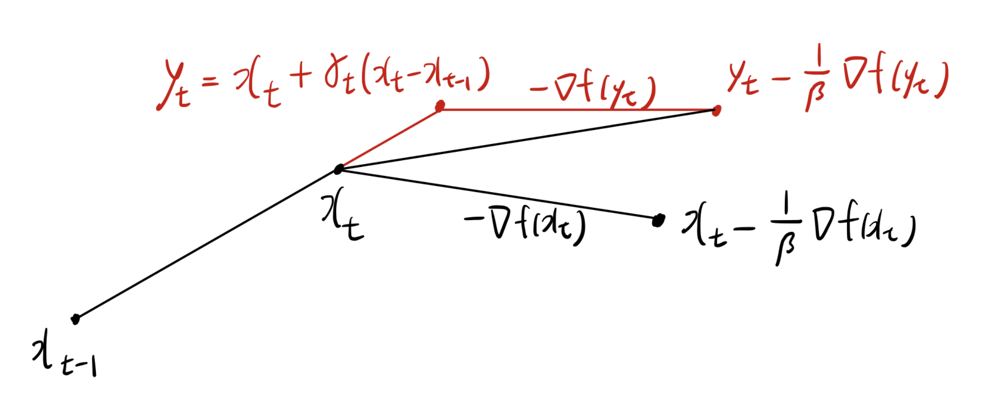
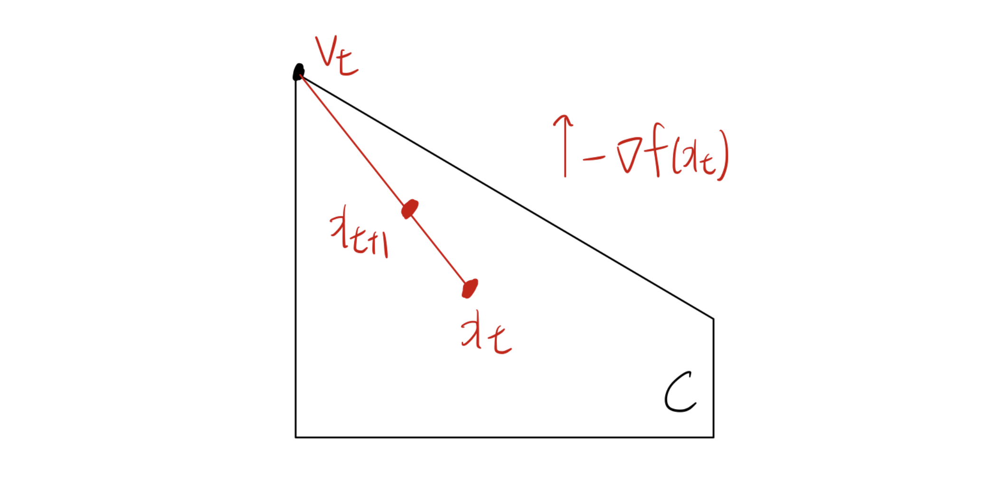

1. 서론: 1차 오라클 복잡도 (First-Order Oracle Complexity)
최적화 알고리즘의 성능을 평가할 때, 알고리즘이 목적 함수에 대한 정보를 얼마나 자주 요청해야 하는지를 측정하는 것이 중요합니다. 특정 해 \(x\)가 주어졌을 때, 1차 오라클(First-order oracle)은 블랙박스 형태로 함수 값 \(f(x_t)\)와 1차 미분 정보인 그래디언트 \(\nabla f(x)\) (또는 서브그래디언트 \(g \in \partial f(x)\))를 반환하는 시스템을 의미합니다.
우리가 다루는 대부분의 알고리즘(예: 경사하강법)은 이 1차 오라클을 기반으로 작동합니다. 초기점 \(x_1\)에서 시작하여, 각 반복(iteration) \(t\)마다 다음 업데이트는 이전까지 얻은 그래디언트들의 선형 결합 공간 내에 존재한다고 가정할 수 있습니다: \[x_{t+1} \in x_1 + \text{span}\{g_1, \dots, g_t\}\]
그렇다면, 이 1차 오라클 정보만을 사용하여 도달할 수 있는 수렴 속도의 한계(Lower bounds)는 무엇일까요? 함수의 특성에 따라 다음과 같은 수학적 하한선이 존재합니다.
1.1. 목적 함수의 성질에 따른 오라클 복잡도 하한
정리 1 (Convex & Lipschitz Continuous) 어떤 상수 \(L > 0\)에 대해 \(L\)-Lipschitz 연속성을 만족하는 볼록 함수 \(f:\mathbb{R}^d \rightarrow \mathbb{R}\)가 존재하여, 1차 오라클 기반 알고리즘으로 생성된 \(t \le d\) 번의 반복 점 \(x_1, \dots, x_t\)들은 다음의 하한을 가집니다:
\[\min_{1 \le s \le t} f(x_s) - \min_{x \in B_2(R)} f(x) \ge \frac{RL}{2(1+\sqrt{t})}\]
- 여기서 \(B_2(R) = \{x \in \mathbb{R}^d : \|x\|_2 \le R\}\)이며 \(R > 0\)입니다. 즉, 일반적인 Lipschitz 볼록 함수에서는 \(O(1/\sqrt{t})\) 보다 빠르게 수렴할 수 없습니다.
정리 2 (Convex & Smooth) 어떤 상수 \(\beta > 0\)에 대해 \(\ell_2\)-노름 기준 \(\beta\)-평활(smooth)한 볼록 함수가 존재하여, \(t \le (d-1)/2\) 인 경우 다음의 하한을 만족합니다:
\[\min_{1 \le s \le t} f(x_s) - \min_{x \in \mathbb{R}^d} f(x) \ge \frac{3\beta\|x_1 - x^*\|_2^2}{32(t+1)^2}\]
- 이는 평활한 볼록 함수의 경우 알고리즘의 최적 수렴 속도가 \(O(1/t^2)\) 임을 시사합니다.
정리 3 (Smooth & Strongly Convex) 어떤 상수 \(\beta \ge \alpha > 0\)에 대해 \(\beta\)-평활하고 \(\alpha\)-강볼록(strongly convex)한 함수가 존재하여, 다음을 만족합니다:
\[f(x_t) - \min_{x \in \mathbb{R}^d} f(x) \ge \frac{\alpha}{2}\left(\frac{\sqrt{\kappa}-1}{\sqrt{\kappa}+1}\right)^{2(t-1)}\|x_1 - x^*\|_2^2\]
- 여기서 조건수 \(\kappa = \beta/\alpha\) 입니다. 이는 강볼록 함수의 경우 선형 수렴(Linear convergence)을 하지만, 그 속도의 밑(base)이 알고리즘의 한계를 결정지음을 보여줍니다.
2. 가속화 기법: Nesterov’s Accelerated Gradient Descent
- 앞서 평활한 함수의 수렴 속도 하한이 \(O(1/t^2)\)임을 확인했습니다. 하지만 표준 경사하강법(Gradient Descent)은 평활한 함수에 대해 \(O(1/t)\)의 수렴 속도를 가집니다. Nesterov 가속 경사하강법은 이 간극을 닫고 점근적으로 최적의 수렴 속도를 달성합니다.
2.1. 모멘텀 (Momentum)의 직관적 이해
- Nesterov 가속화의 핵심 아이디어는 모멘텀(Momentum)입니다. 기존 경사하강법이 현재 점 \(x_t\)의 정보만으로 다음 점을 결정했다면, 모멘텀 기법은 이전 스텝에서의 이동 방향인 \(x_t - x_{t-1}\)을 업데이트에 반영합니다.

수식으로 정리하면 다음과 같이 새로운 중간 지점 \(y_t\)를 계산합니다: \[y_t = x_t + \gamma_t(x_t - x_{t-1})\]
여기서 \(\gamma_t \ge 0\)는 모멘텀 파라미터입니다. 그리고 이 \(y_t\)에서 경사하강법 업데이트를 적용합니다: \[x_{t+1} = y_t - \frac{1}{\beta}\nabla f(y_t)\]
2.2. 알고리즘 및 수렴성 증명 (Smooth Case)
Algorithm 1: Nesterov’s accelerated gradient descent
- 초기화: \(x_1 \in \text{dom}(f)\), \(x_0 = x_1\) 설정
- 반복 (\(t = 1, \dots, T\)):
- \(y_t = x_t + \gamma_t(x_t - x_{t-1})\) (단, \(\gamma_t = \frac{t-2}{t+1}\))
- \(x_{t+1} = y_t - \frac{1}{\beta}\nabla f(y_t)\)
- 출력: \(x_{T+1}\) 반환
정리 4 (Smooth 함수의 수렴성 증명 과정)
- 목표는 \(f(x_T) - f(x^*) \le O(1/T^2)\)를 증명하는 것입니다.
Proof:
함수 \(f\)가 \(\beta\)-평활하므로, 중간점 \(y_t\)에서 업데이트된 \(x_{t+1}\)에 대해 다음의 하강 보조정리(Descent Lemma)가 성립합니다: \[f(x_{t+1}) \le f(y_t) + \nabla f(y_t)^\top (x_{t+1} - y_t) + \frac{\beta}{2} \|x_{t+1} - y_t\|_2^2\]
\(x_{t+1} - y_t = -\frac{1}{\beta}\nabla f(y_t)\) 이므로 대입하면: \[f(x_{t+1}) \le f(y_t) - \frac{1}{2\beta}\|\nabla f(y_t)\|_2^2 \quad \cdots (1)\]
또한, \(f\)가 볼록 함수이므로 임의의 \(x\)에 대해 1차 조건이 성립합니다: \[f(y_t) \le f(x) + \nabla f(y_t)^\top (y_t - x) \quad \cdots (2)\]
식 (1)에 식 (2)를 대입하여 \(\nabla f(y_t)\)에 대해 정리하면: \[f(x_{t+1}) - f(x) \le \nabla f(y_t)^\top (y_t - x) - \frac{1}{2\beta}\|\nabla f(y_t)\|_2^2\]
이 식을 \(x = x_t\)인 경우와 \(x = x^*\)인 경우로 나누어 선형 결합을 만듭니다. 적절한 가중치 수열 \(\lambda_t\)를 도입하여 (보통 \(\lambda_t^2 - \lambda_t = \lambda_{t-1}^2\)를 만족하도록 설정, \(\lambda_t \approx \frac{t}{2}\)) 텔레스코핑 합(Telescoping sum) 형태의 리야푸노프 함수(Lyapunov function)를 구성합니다: \[E_t = \lambda_{t-1}^2 (f(x_t) - f(x^*)) + \frac{\beta}{2} \|v_t - x^*\|_2^2\]
여기서 \(v_t\)는 모멘텀 항을 포함한 보조 수열입니다. 모멘텀 파라미터 \(\gamma_t = \frac{\lambda_{t-1}-1}{\lambda_t}\)로 설정하면, 부등식 조작을 통해 \(E_{t+1} \le E_t\)임이 보장됩니다.
즉, \(E_T \le E_1\)이 성립하며 이를 전개하면 다음과 같은 결론에 도달합니다: \[f(x_T) - f(x^*) \le \frac{2\beta\|x_1 - x^*\|_2^2}{(T+1)^2}\]
이 증명은 모멘텀 \(\gamma_t\)가 단순한 휴리스틱이 아니라, 매 스텝마다 오차의 상한이 엄격하게 감소하도록 설계된 수학적 결과물임을 보여줍니다. \(\blacksquare\)
3. 사영 없는 최적화: Frank-Wolfe Algorithm
- 제약 조건이 있는 최적화 문제에서는 사영 경사하강법(Projected Gradient Descent, PGD)을 널리 사용합니다. 하지만 실무적으로 볼록 다면체 \(C\)와 같은 복잡한 형태의 실행 가능 영역(feasible set)으로의 사영(Projection) 연산 비용이 매우 비쌀 수 있다는 치명적인 단점이 존재합니다 (QP 문제를 풀어야 함).
3.1. 조건부 경사하강법 (Frank-Wolfe Algorithm)
- Frank-Wolfe 알고리즘은 매 스텝에서 투영 연산을 수행하는 대신, 목적함수를 선형 근사한 후 제약 집합 내에서 해당 선형 함수를 최소화하는 극단점(extreme point)을 찾는 선형계획법(LP)으로 대체합니다.
Algorithm 2: Frank-Wolfe algorithm
- 초기화: \(x_1 \in C\)
- 반복 (\(t = 1, \dots, T-1\)):
- \(v_t \in \arg\min_{v \in C} \nabla f(x_t)^\top v\) 방향 벡터 계산
- \(x_{t+1} = (1-\lambda_t)x_t + \lambda_t v_t\) 로 업데이트 (\(0 < \lambda_t < 1\))
- 출력: \(x_T\) 반환

3.2. 수렴성 증명
정리 6 (Frank-Wolfe 수렴성 및 증명 과정)
- 함수 \(f\)가 제약 집합 \(C\) 내에서 상수 \(\beta > 0\)에 대해 평활하다고 가정합시다. 스텝 사이즈를 \(\lambda_t = \frac{2}{t+1}\)로 설정할 때, \(t \ge 2\)에 대해 다음이 성립함을 증명합니다. \[f(x_t) - f(x^*) \le \frac{2\beta R^2}{t+1}\]
- 단, \(R = \sup_{x,y \in C} \|x-y\|\)는 제약 집합의 직경
Proof:
\(f\)의 평활성 정의에 의해 다음이 성립합니다: \[f(x_{t+1}) \le f(x_t) + \nabla f(x_t)^\top (x_{t+1} - x_t) + \frac{\beta}{2} \|x_{t+1} - x_t\|^2\]
알고리즘의 업데이트 식 \(x_{t+1} = x_t + \lambda_t(v_t - x_t)\)를 대입합니다: \[f(x_{t+1}) \le f(x_t) + \lambda_t \nabla f(x_t)^\top (v_t - x_t) + \frac{\beta \lambda_t^2}{2} \|v_t - x_t\|^2\]
집합 \(C\)의 직경 한계에 의해 \(\|v_t - x_t\|^2 \le R^2\) 이 성립합니다.
또한, \(v_t\)는 \(\nabla f(x_t)^\top v\)를 최소화하도록 선택되었으므로, 최적해 \(x^* \in C\)에 대해서도 \(\nabla f(x_t)^\top v_t \le \nabla f(x_t)^\top x^*\)가 성립합니다. 이를 활용하면: \[\nabla f(x_t)^\top (v_t - x_t) \le \nabla f(x_t)^\top (x^* - x_t)\]
\(f\)는 볼록 함수이므로 1차 조건에 의해 \(f(x^*) \ge f(x_t) + \nabla f(x_t)^\top (x^* - x_t)\)가 성립합니다. 식을 넘기면: \[\nabla f(x_t)^\top (x^* - x_t) \le f(x^*) - f(x_t)\]
이를 종합하여 원래의 부등식에 대입합니다. 편의상 \(h_t = f(x_t) - f(x^*)\)라 정의하면: \[h_{t+1} \le h_t + \lambda_t (f(x^*) - f(x_t)) + \frac{\beta \lambda_t^2 R^2}{2}\] \[h_{t+1} \le (1 - \lambda_t) h_t + \frac{\beta \lambda_t^2 R^2}{2}\]
이제 \(\lambda_t = \frac{2}{t+1}\)로 두고 수학적 귀납법을 적용합니다.
\(t=1\)일 때는 직경의 정의상 자명하게 성립합니다. \(h_t \le \frac{2\beta R^2}{t+1}\)가 성립한다고 가정하고 \(t+1\)일 때를 계산하면: \[h_{t+1} \le \left(1 - \frac{2}{t+1}\right) \frac{2\beta R^2}{t+1} + \frac{\beta R^2}{2} \left(\frac{2}{t+1}\right)^2\] \[h_{t+1} \le \left(\frac{t-1}{t+1}\right) \frac{2\beta R^2}{t+1} + \frac{2\beta R^2}{(t+1)^2} = 2\beta R^2 \frac{t}{(t+1)^2}\]
이때 \(\frac{t}{(t+1)^2} < \frac{t+1}{(t+1)(t+2)} = \frac{1}{t+2}\) 이므로, \[h_{t+1} \le \frac{2\beta R^2}{t+2}\] 가 되어 귀납법이 완성됩니다. \(\blacksquare\)
4. 활용 사례: 저랭크 행렬 완성 (Low-rank Matrix Completion)
- 넷플릭스 영화 추천과 같이 유저-영화 평점 행렬 \(A \in \mathbb{R}^{n \times p}\)의 누락된 원소를 추정하는 문제를 생각해봅시다. 데이터의 근본적인 차원이 낮다는 가정하에 다음과 같은 볼록 최적화 문제로 모델링할 수 있습니다: \[\text{minimize } \frac{1}{2}\|A - X\|_F^2 \quad \text{subject to } \|X\|_{\text{nuc}} \le k\]
- \(\| \cdot \|_{\text{nuc}}\)은 행렬의 특이값 합인 핵 노름(Nuclear Norm)이며, 랭크 제약을 볼록화한 형태입니다.
- 이 문제에서 PGD와 Frank-Wolfe(FW) 알고리즘의 효율성을 비교하면 FW의 압도적인 장점이 드러납니다.
- PGD 사용 시: 제약 조건 \(C = \{X : \|X\|_{\text{nuc}} \le k\}\) 위로의 사영을 위해 매 스텝 행렬의 전체 특이값 분해(Full SVD)를 수행해야 하므로 막대한 계산 자원이 낭비됩니다.
- Frank-Wolfe 사용 시: FW 서브 문제는 다음 형태를 띱니다. \[V_t \in \arg\min \{ \text{Tr}((A-X_t)^\top V) : \|V\|_{\text{nuc}} \le k \}\]
- 이는 행렬 \((X_t - A)\)의 최상위 특이 벡터(Top singular vectors) 쌍을 구하는 문제로 귀결되며, 고비용의 SVD 대신 빠른 거듭제곱법(Power Method)만으로 연산이 가능하여 속도 면에서 극명한 이점을 제공합니다.